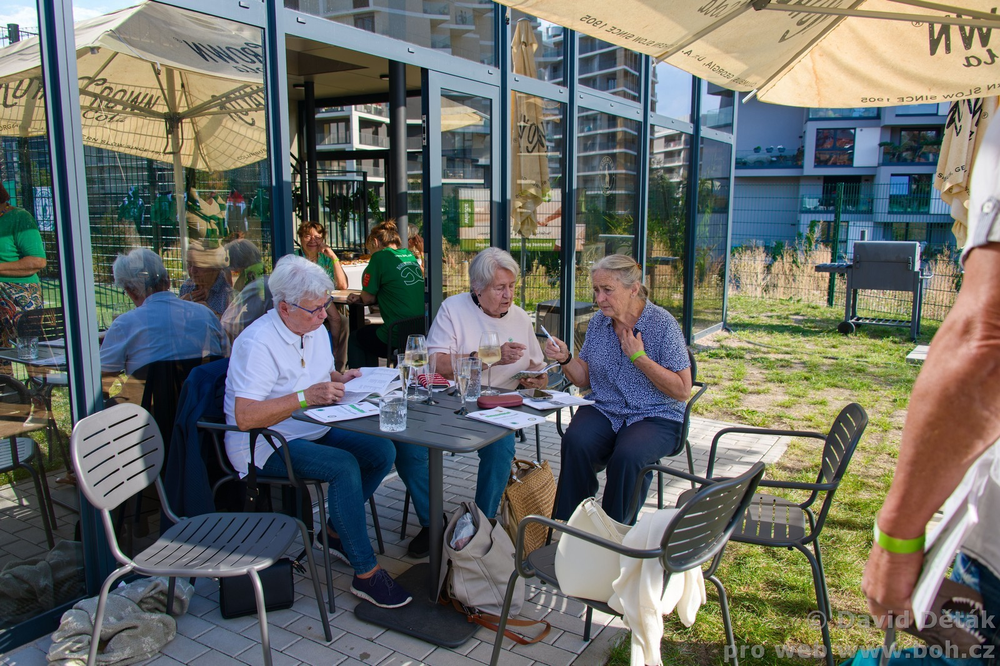
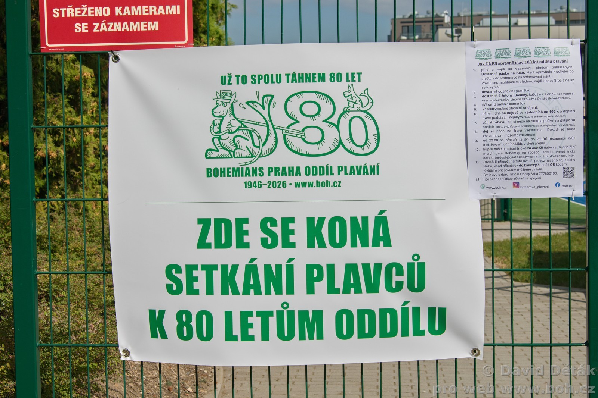
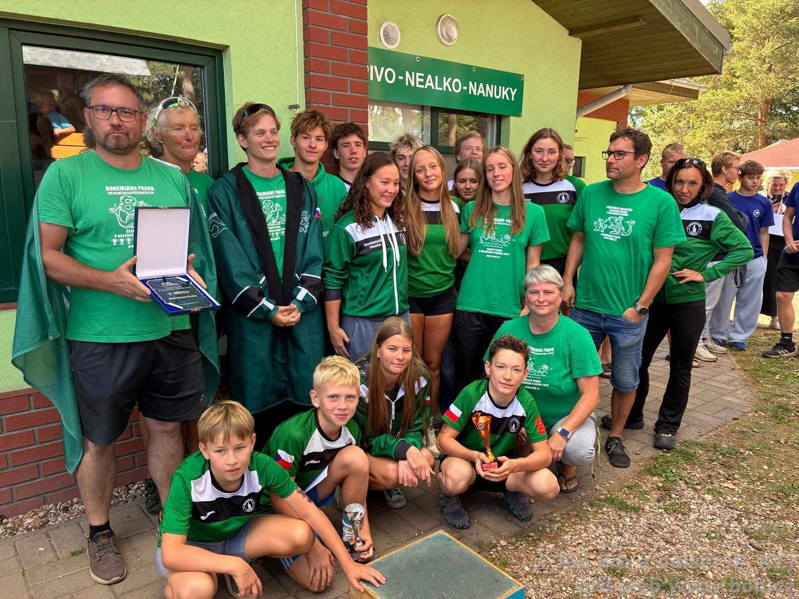
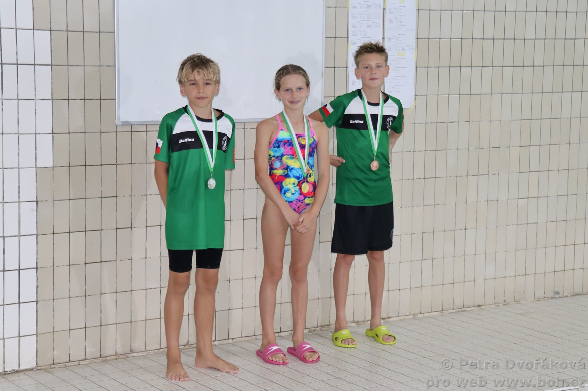
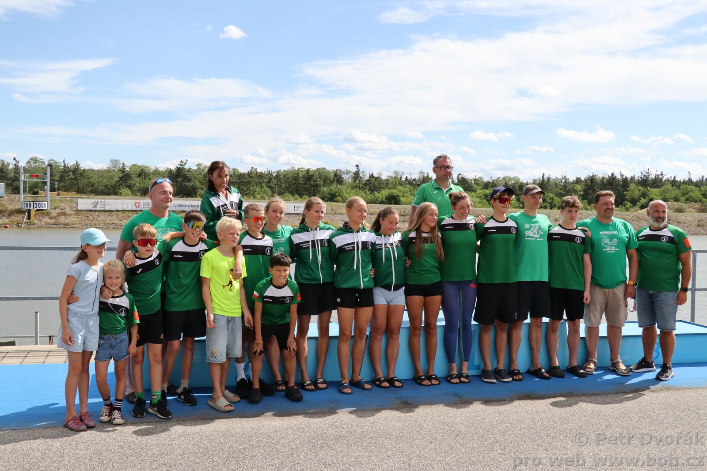

Plavecký oddíl Bohemians Praha
Jsme plavecký oddíl Klokanů s osmdesátiletou tradicí. Vychováváme sportovce od dětských kurzů a přípravky až po reprezentaci na mistrovstvích republiky a Evropy. Našimi domovy jsou plavecký stadion Podolí a bazén Vinohrady.

212 plavců, trenérů a přátel oddílu pohromadě
Dění v oddíle
Nejnovější aktuality
Nástěnka trenérů
Vzkazy pro rodiče
Tréninky ST+ODA+G týden do 18.10.
Tréninky v Podolí a na Vinohradech probíhají dle platného rozvrhu. Plavci závodních družstev nezapomeňte na povinnou suchou přípravu a dochvilnost.
Detail vzkazu →Přípravka ukázková hodina ve čtvrtek 15. 10.
Ukázková hodina pro rodiče dětí v přípravce na bazénu Vinohrady. Sraz v 16:15 v hale bazénu Slovenská. Vstup na ochoz bazénu pouze v přezůvkách.
Detail vzkazu →Infolístky k závodům
PDF z boh.czOficiální dokumenty boh.cz
Novinky ke stažení
Rozřazení do skupin, rozvrh a platby 2026-27
Kompletní rozdělení plavců do skupin (ST, ODA, ODB, Výběr, Přípravka), časy tréninků a členské příspěvky.
Výklad pravidel plavání (2026)
Výtah a oficiální vysvětlení pravidel plavání ČSPS a World Aquatics pro plavce, trenéry a rozhodčí.
Lyžařské soustředění 2026 — kilometráž a týmy
Kompletní výsledky jednotlivců, ujetá kilometráž na běžkách a bodování týmů ze soustředění Klokanů.
Lékařský posudek zdravotní způsobilosti
Formulář tělovýchovné lékařské prohlídky vyžadovaný pro závodní činnost a starty na soutěžích ČSPS.
Oddílové tabulky, rekordy a TOP 10 (2025)
Historická ročenka výkonů: oddílové rekordy v 25m i 50m bazénech ve všech kategoriích.
Etický kodex plavců Bohemians
Zásady sportovního chování, reprezentace zelenobílých barev, fair play a týmového ducha.
Fotoreportáže Klokanů
Poslední fotogalerie
Bazénové závody
2026
Velká cena města Plzně
Český pohár Arena Cup, Plzeň Slovany 50m

Oslava 80 let 2026Oslava 80 let retro fotky na LED
Historické momentky a filmová projekce 1946–2026

Oslava 80 let 2026Oslava 80 let oddílu (Hagibor)
Hagibor, slavnostní setkání 212 Klokanů všech generací

Dálkové plavání 2026Pohár Lídy Jelínkové DP a Podzimní rožeň
Závěr Českého poháru v dálkovém plavání v Mělicích

Oddílové závody 2026Malá cena plavajícího klokana
Úvodní měřené oddílové závody v bazénu Vinohrady

Dálkové plavání 2026Mistrovství ČR DP v Račicích
5 km, 20 km a štafety — medaile a dorostenecké tituly
Plavecké mítinky & soutěže
Pořádáme
Plavecký oddíl TJ Bohemians Praha každoročně pořádá tradiční významné sportovní podniky od mezinárodních závodů až po přebory pro nejmladší Klokánky.
Jarní cena Prahy
Tradiční mezinárodní plavecký mítink pořádaný oddílem TJ Bohemians Praha. Jeden z nejstarších a nejprestižnějších mítinků na 50m bazénu v Praze za účasti špičkových českých i zahraničních reprezentantů.
Malá cena plavajícího klokana
Tradiční podzimní měřené kontrolní závody žactva a přípravky v domácím bazénu na Vinohradech. Příležitost pro mladé Klokany otestovat formu na začátku sezóny a zaplavat si osobní rekordy.
Vinohradská veteraniáda
Vyhlášené plavecké klání plavců kategorie masters, bývalých závodníků a přátel oddílu. Koná se tradičně poslední listopadovou sobotu v bazénu na Vinohradech v neopakovatelné zelenobílé atmosféře.
Kde trénujeme
Naše domácí bazény
Plavecký stadion Podolí
Podolská 74, 147 00 Praha 4
Centrální tréninkové středisko pro závodní družstva A, B, C a Masters. K dispozici je 50m vnitřní bazén, 50m venkovní celoročně vyhřívaný bazén, 33m skokanský bazén a posilovna.
Bazén Vinohrady (Slovenská)
Slovenská 2, 120 00 Praha 2
Základna pro výuku dětí od 4 let, kurzy základního a zdokonalovacího plavání, mladší přípravku a kondiční plavce. 25m krytý bazén s klidnějším zázemím pro mladé plavce.
Podporují nás